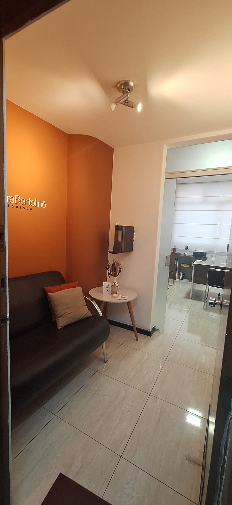

Nutrição · Belo Horizonte e online
Alessandra
Bertolino
Uma alimentação que encontra a sua vida.
Acompanhamento nutricional com atenção à rotina, ao orçamento e aos hábitos de quem vai viver o plano.
Nutricionista · CRN9 6671A vida real entra na conversa
O plano precisa caber no seu dia.
Rotina
Trabalho, tempo para cozinhar e momentos das refeições.
Orçamento
Escolhas que consideram os recursos disponíveis.
Hábitos
O que já faz parte do cotidiano e o que ainda é difícil.
Contexto
Um começo possível, com espaço para ajustes.
Como pensar o acompanhamento
Construir. Viver. Ajustar.
- Entender o contextoOlhar para como a alimentação acontece no dia a dia.
- Construir o possívelComeçar por escolhas que possam ser incorporadas à rotina.
- Conversar sobre os ajustesA orientação é individual. Dificuldades de execução também fazem parte da conversa.
A ideia que orienta a conversa
“Primeiro construímos uma alimentação possível. Depois fazemos ajustes.”— Alessandra Bertolino ↗
Do plano para a rotina.
Uma fruta levada ao trabalho é um dos exemplos que Alessandra usa para falar sobre hábitos do dia a dia.
Explore a alimentação possível ↗A nutricionista
Conheça Alessandra.
6671
Acompanhamento individual
Rotina, orçamento e hábitos entram na conversa.
Objetivos de cuidado
Atuação em emagrecimento e hipertrofia, com orientação individual.
Alessandra compartilha
Ideias para o dia a dia.
Para sua visita
Um endereço
no Centro.
Atendimento com horário combinado. Confirme a visita antes de ir.
Conheça o consultórioEdifício Belbanco · Centro
Belo Horizonte/MG · CEP 30180-906
Dúvidas frequentes
Antes de começar
Alessandra atende online?
Sim. Além do presencial em Belo Horizonte, há consultas online. Combine os detalhes com a recepção.
Preciso chegar com uma dieta pronta?
Não. O acompanhamento considera rotina, hábitos e objetivos conversados em consulta.
Há um resultado ou prazo igual para todos?
Não. O cuidado e a orientação são individuais.
O pedido no site confirma o horário?
Não. Ele prepara uma preferência de dia e hora, que a recepção confirma manualmente.
O próximo passo
Qual dia e hora
você prefere?
Prepare a mensagem sem informar dados de saúde. Não é uma reserva: a recepção confirma o atendimento.
Presencial e online
Vamos construir o seu começo?
Converse com a recepção. O dia e a hora de atendimento são confirmados manualmente.